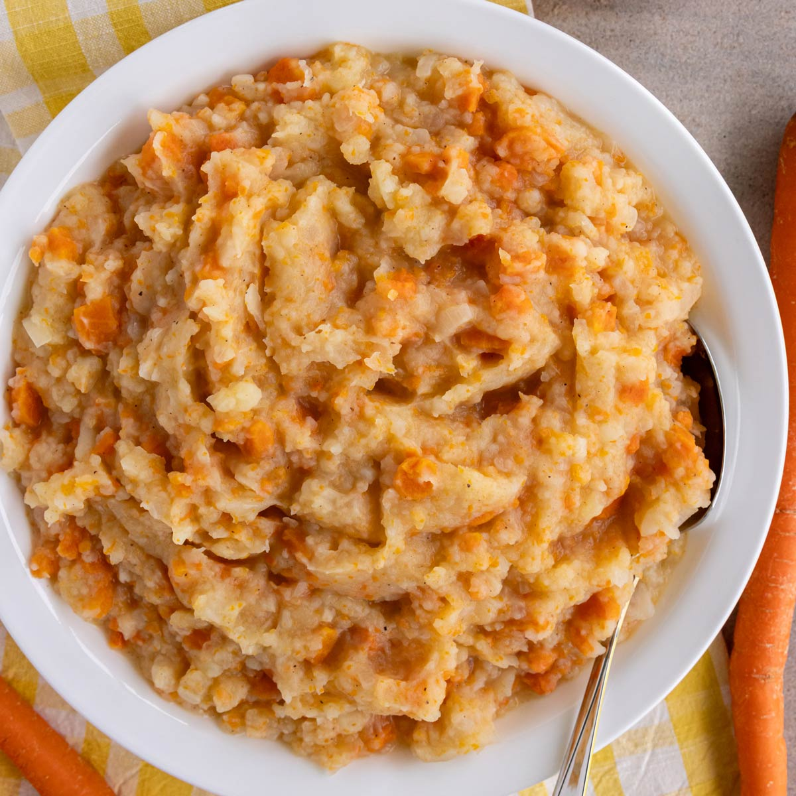

Hutspot

Hutspot is another one of my favorites!
Another no -nonsense Dutch dish meant to taste good and nourish
the body and soul.
Typically enjoyed in winter, but, as with any of my recipes, also fine
to enjoy slightly smaller portions of year-round!
Ingredients
- 500g Potatoes
- 300g diced Carrots
- 300g diced white Onion
- 250g diced Bacon
So, how do we make it?
-
Peel the potatoes, dice the carrots, dice the onions and put them
all together in a big pot, submerge in water.
-
Cook for 30 minutes, pour off the water and mash everything together.
-
Take your skillet and bake the diced bacon until golden brown.
-
Add the bacon to the mash.
-
Just leave it in the big pot, put on the table and feast!